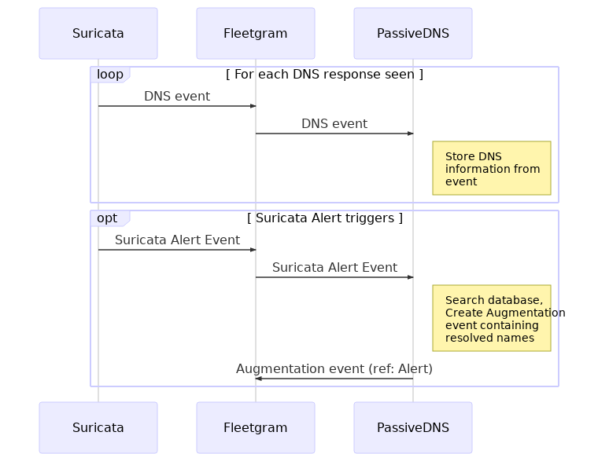

PassiveDNS Instrument can be used to store information from DNS requests and then use the stored information to augment other events.
PassiveDNS uses DNS events from suricata to store the DNS information. The database of collected address to name -mappings is then used to augment name resolution information to Suricata alerts. Whenever Suricata alert is received, PassiveDNS Instrument will submit another event containing names, if found, to IP addresses in Suricata alerts. This event might give forensic information about the names an address has been associated with.
PassiveDNS Instrument also provides simple HTTP API which allows users to query the database that has been collected. The API provides methdos for
| Instrument developer | SensorFleet Oy |
| Network access type | None |
| Required interfaces | None |
| Instrument dependencies | Suricata IDS |
| Data retention | PassiveDNS Instrument stores DNS information up to the configured period. |
| Management UI | Yes |
| Performance | PassiveDNS Instrument can handle thousands of DNS requests per second(??) |
Following sequence shows the operation of PassiveDNS Instrument with Suricata Instrument. Whenever DNS response is seen, Suricata Instrument will send DNS event to SensorFleet message bus. This event is received by PassiveDNS Instrument, which stores the DNS records to its database. Later, if Suricata Alert is triggered, surciata will send Alert Event to SensorFleet message bus. PassiveDNS Instrument will receive also this alert and for each IP address in the Alert, it will query it’s database of stored DNS records and create Augmentation Event containing this information and a reference to the Suricata Alert for which the augmentation is made.
